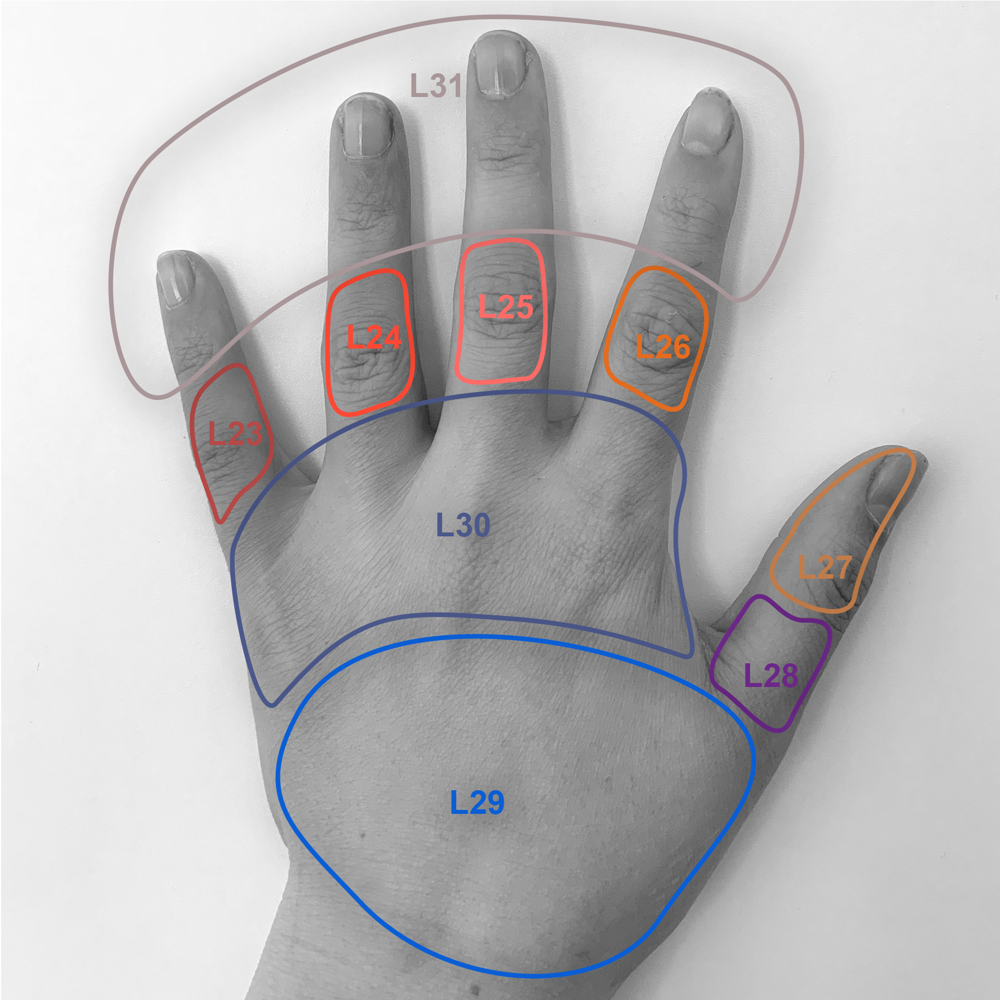
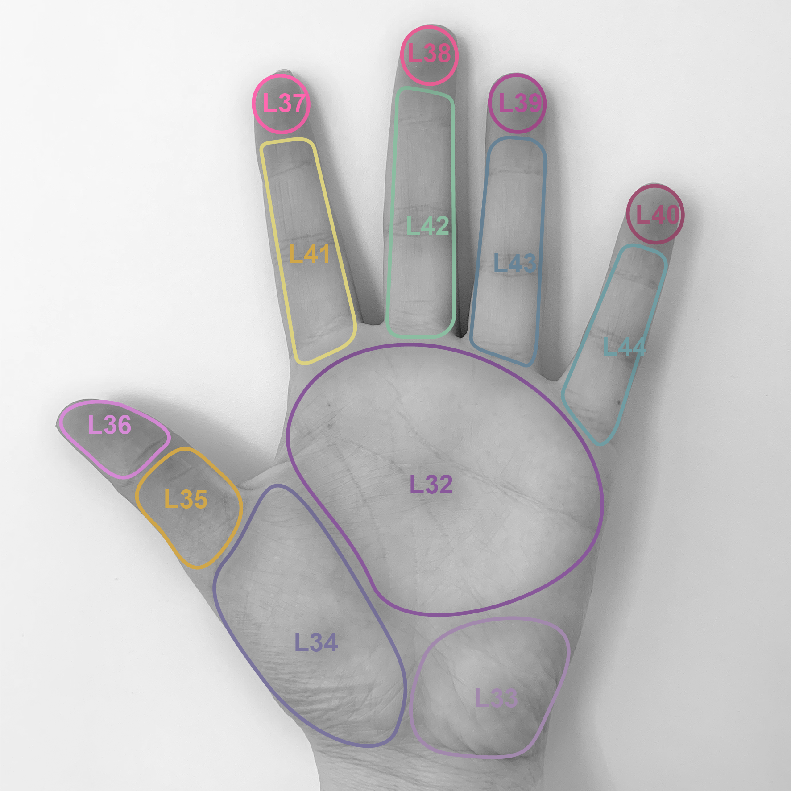
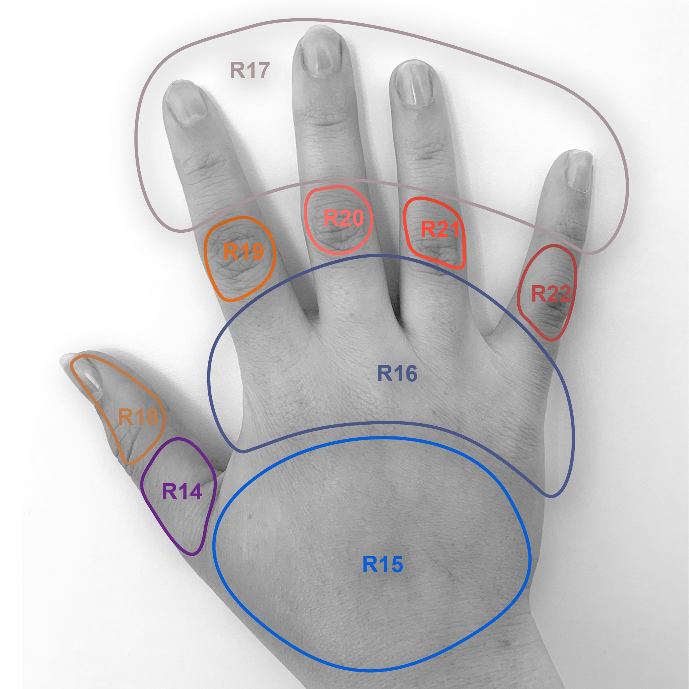
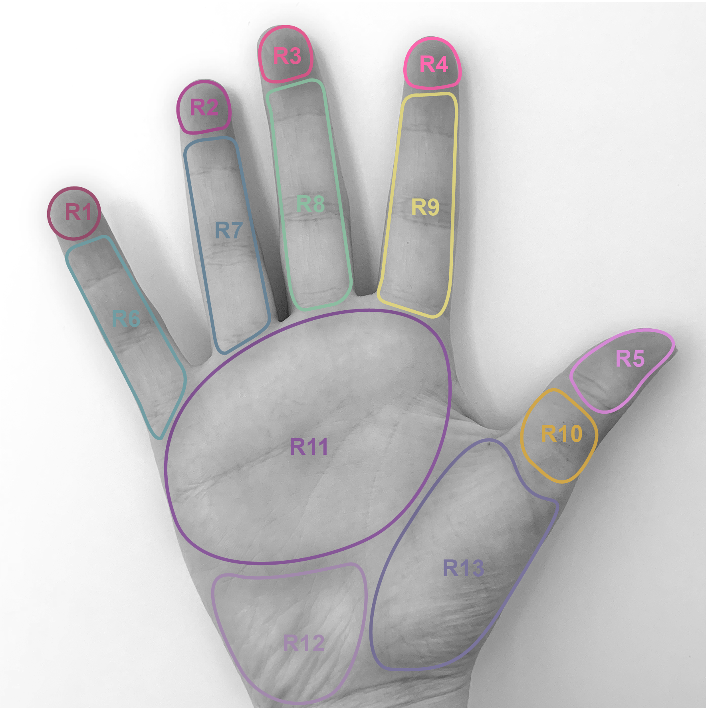

Projektbeschreibung
Zwischen 400- bis 800-mal am Tag berühren wir unser Gesicht und in der Regel nehmen wir von dieser Bewegung, die lediglich circa 1,3 Sekunden dauert, kaum etwas wahr. Selbstberührungen sind also eine sehr häufige Alltagshandlung;
In unserem
Projekt wollten wir uns genauer mit diesen unscheinbaren Berührungen auseinandersetzen. Besonders interessant fanden wir folgende Punkte:
- Wie häufig werden die unterschiedlichen Stellen im Gesicht berührt?
- Haben wir individuelle Vorlieben, sprich berühren wir uns im selben Gesichtsteil mit unterschiedlichen Teilen der Hand? (Vergleich unserer Ergebnisse)
- Wie beeinflusst unser Umfeld sowie der allgemeine Kontext unsere Gesichtsberührungen?
- Welcher Berührungsgrund überwiegt in den jeweiligen Gesichtsteilen?
Beispiel Tracking
Die Daten sammeln wir in einer Tabelle. Um beim Tracking möglichst viel zu dokumentieren arbeiten wir mit Abkürzungen. Grund, Gesichtskoordinate und Handkoordinate werden anschliessend in ein JSON File exportiert und mit p5 visualisiert.
Definierte Bereiche der Hand
In unserer Datenerfassung erheben wir sowohl die Daten des «Berühren» und des «Berührt werden» Dieses Wechselspiel ist sehr spannend, jedoch liegt unser Fokus auf dem Gesicht. Daher haben wir für die Hände eigenen Bereiche definiert (d.h. bestimmte Punkte zusammengefasst)
   Gesichtskoordinatensysteme
Um die Berührungspunkte auf der Website in einem einheitlichen «Berührungsprofil» darstellen zu können, entschlossen wir uns einzelne Gesichtspunkte durch ein Koordinaten System zu definieren. Dazu zerlegten wir unser Gesicht in 196 einzelne Felder die einem genauen Punkt des Koordinatensystem auf der Webiste entsprechen.